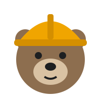
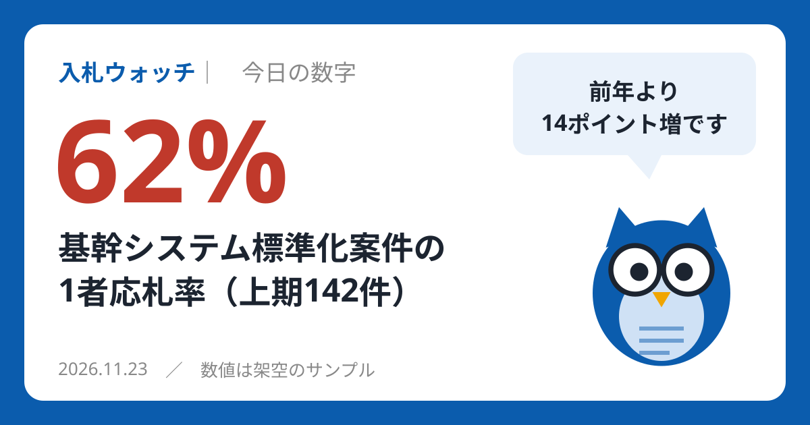
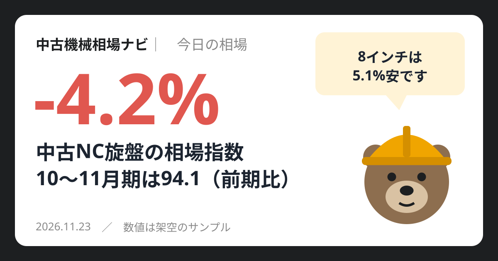

ニッチ業界ニュースサイト 5案
各案の記事モックアップ付き。記事中の数値・団体・人物はすべて架空です。
キュレーションにしないための共通ルール 他サイトの記事を要約して載せない。どの記事にも「自分で集めた一次データ」を必ず1つ入れ、出典つきのファクトとして示す。意見は「キャラクターの見解」欄に分けて書き、本文には混ぜない。
記事の形（全サイト共通）
- アイキャッチ画像（今日の数字＋キャラクターのひとこと）
- 数字入りのニュース見出し、署名「文：キャラクター（AI）／確認：編集部」
- リードと本文（ファクトと図表のみ）
- この記事のファクト（番号つき・出典つき）
- キャラクターの見解（意見はここだけ）
- 次に注目する点、集計方法
キャラクター
ミハル入札ウォッチ
夜通し公告を読むフクロウ。冷静で、数字を先に言う。団体や企業を名指しで責めない。

ゲン中古機械相場ナビ元旋盤工のクマ。短く率直。売る側・買う側それぞれに一言。
湯太郎湯屋経営
銭湯めぐりが趣味のカッパ。厳しい数字も正直に伝え、打てる手を1つ示す。
 しずか葬祭ビジネス定点
しずか葬祭ビジネス定点定点観測係の黒猫。静かで丁寧。冗談やあおる表現は使わない。
 ペン子士業DXノート
ペン子士業DXノート事務所の書記ペンギン。実務的で、「明日からできること」を必ず1つ添える。
毎日の投稿の流れ（案）
集める
公告・相場・空き枠などを決まった時刻に自動で取得
公告・相場・空き枠などを決まった時刻に自動で取得
ファクト化
前日との差や集計値を出し、出典つきの一覧にする
前日との差や集計値を出し、出典つきの一覧にする
下書き
AIがキャラクターの口調で、本文と見解を書く
AIがキャラクターの口調で、本文と見解を書く
画像
今日の数字を JSON に入れ、スクリプトでアイキャッチを作る
今日の数字を JSON に入れ、スクリプトでアイキャッチを作る
人が確認
数字・出典・見解の行き過ぎを見て公開を判断
数字・出典・見解の行き過ぎを見て公開を判断
投稿
ポケットログの投稿の仕組みで記事とSNSに出す
ポケットログの投稿の仕組みで記事とSNSに出す
アイキャッチ画像（自動生成）




各サイトの記事
案1 ／ 公開データ集計型
入札ウォッチ
- 読者
- 自治体向けITベンダーの営業、議員・記者
- 独自のネタ
- 各自治体の入札公告・結果を集めて、応札者数や落札率を集計
- 収益
- 新着公告のメール配信（月額）、CSV販売
案2 ／ 相場インデックス型
中古機械相場ナビ
- 読者
- 町工場の経営者、中古機械の買取・販売業者
- 独自のネタ
- オークション成約価格と読者提供の見積書から相場指数を作る
- 収益
- 成約価格DBの有料会員、買取業者の広告
案3 ／ 開業・廃業と経費の集計型
湯屋経営
- 読者
- 銭湯・サウナ・温浴施設の経営者、承継を考える人
- 独自のネタ
- 開業・廃業の記録、燃料価格・入浴料金の動きの集計
- 収益
- 設備・燃料業者の広告、事業承継の仲介紹介
案5 ／ 調査・制度の速報型
士業DXノート
- 読者
- 小規模な社労士・税理士・行政書士の事務所
- 独自のネタ
- 公開された調査・補助金・料金改定を集めて、事務所目線で整理
- 収益
- 導入支援の相談受付（副業と直結）、ツール紹介
| 比較 | 案1 入札 | 案2 機械相場 | 案3 銭湯 | 案4 葬祭 | 案5 士業DX |
|---|---|---|---|---|---|
| 自動化のしやすさ（記事の仕組みとの相性） | ◎ 収集→集計→記事化 | ○ データ入手が鍵 | △ 取材が必要 | ◎ 毎日自動で記録 | △ 取材が必要 |
| 一次データの集めやすさ | ◎ 公開情報 | △ 提携先が必要 | △ 人脈次第 | ○ 公開画面＋電話 | ○ 自分の案件が素材 |
| 競合の少なさ | ○ | ◎ | ◎ | ○ | △ |
| お金を払う読者がいるか | ◎ 営業の情報源 | ◎ 売買の判断材料 | △ 小規模経営者 | ○ 葬儀社 | ○ 相談につながる |
| 注意点 | サイトごとに形式がばらばら | データ提供元との契約 | 更新頻度を保ちにくい | 扱う題材への配慮、収集頻度とサイト規約 | 守秘義務への配慮 |
おすすめ：まず案1（入札ウォッチ）、次に案5。 案1は公開データだけで記事が作れ、「収集→集計→記事の下書き」を仕組み化しやすいため、いま作っている投稿の仕組みを流用しやすい案です。案5は取材が要りますが、ご自身の副業（個人事業）の集客と直接つながります。